Wallaroo Metrics UI
Introduction
In this section, we'll introduce you to the Wallaroo Metrics UI. The Metrics UI is a tool to allow you to get soft real-time metric updates for any connected Wallaroo applications. The Metrics UI will provide you with a general and detailed performance overview of each running application.
Metrics are reported for 3 top level categories in a Wallaroo application: Pipelines, Workers, and Computations. Each top level category is an aggregation of elements in its own subcategory. The Metrics UI also provides metrics for each subcategory. All metrics are provided using a time window of the last 5 minutes of processing.
At this point we assume you've made your way through the Setting Up Your Environment for Wallaroo and Core Concepts sections of the documentation. If you haven't, please do so and return here once you have.
Getting Started with the Metrics UI
In Docker
You should already have Docker installed if you have followed the Setup instructions in the Setting Up Your Environment for Wallaroo section of the documentation.
Running the Metrics UI
NOTE: You might need to run with sudo depending on how you set up Docker.
Once you have Docker setup, you can grab the Metrics UI image by running:
docker pull wallaroo-labs-docker-wallaroolabs.bintray.io/release/metrics_ui:0.4.3-1-g053bdaf
To start the Metrics UI you will run:
docker run -d --name mui -p 0.0.0.0:4000:4000 -p 0.0.0.0:5001:5001 \
wallaroo-labs-docker-wallaroolabs.bintray.io/release/metrics_ui:0.4.3-1-g053bdaf
If you are running locally, open http://localhost:4000 in your browser to verify the Metrics UI is up and running.
To restart and stop the Metrics UI you can run the following:
docker restart mui
docker stop mui
If you'd like to start the Metrics UI back up after it has been stopped run:
docker start mui
What are Wallaroo Metrics?
To establish performance criteria for Wallaroo applications, We decided to use two key metrics:
- Latency: the amount of time it takes to process an individual event, measured as the percentile of the latency for a sample of events.
- Throughput: a count of events (as defined by their category) processed per second.
Latency Metrics
Latency metrics are calculated using fixed bin histograms. Each bin represents the percentage of messages that fall within the time frame assigned to that bin. A bins time frame is defined as greater than the upper limit of the bin before it (or 0, if no bin precedes) and less than or equal to its own upper limit. (ex. Bin Range: 1ms < x ≤ 2ms)
Why fixed bins? Fixed bin histograms allow for inexpensive processing on the Wallaroo side and give us the ability to answer questions such as:
What percentage of events completed in less than x milliseconds?
By aggregating the data within these bins, we can provide users with the following stats: 50th Percentile Bin, 90th Percentile Bin, 95th Percentile Bin, 99th Percentile Bin, and 99.9th Percentile Bin. (x Percentile Bin representing the upper limit of the bin that x percent of calculated latencies fall within) We also provide a Percentage by Bin graph. This graph aggregates across a set of key bins in order to give a quick overview of performance in relation to bins that we find meaningful to the user.
Throughput Metrics
Throughput metric stats are calculated for our last 5 minutes time window and we provide the minimum, median, and maximum throughput observed. We also provide a Throughput per Second graph of the median for the last 5 minutes, which can be used to quickly see if there has been a spike in performance.
Metric Categories
Pipeline Stats
Reported for every pipeline within an application. Calculated as the time a message was received in Wallaroo to its completion as defined by the pipeline.
Because a message can generate one or more outgoing messages, there are two throughputs recorded for a pipeline:
1. Ingestion throughput, defined as how many messages entered a pipeline per second.
2. Outbound throughput, defined as how many messages were processed by a pipeline per second.
For categories that display both ingestion throughput and outbount throughput, throughputs would be displayed preceding and following the -|< symbol respectively.
A pipelines total stats is an aggregation of each worker reporting stats for said pipeline.
Subcategory: Pipeline by Worker Stats
Reported as the time of ingestion from the source to the time of completion for a message on a given worker for a pipeline. Includes network time if a message crosses boundaries between two workers.
Worker Stats
Reported for every worker that is part of an application. Calculated as the time a message was received on a worker to its completion or hand off to another worker. Reported for every pipeline running on a worker. A workers total stats is an aggregation of each message passing through on this worker for a given pipeline.
Subcategory: Worker by Pipeline Stats
Reported as the time of ingestion of a message on said worker to its completion or hand off to another worker for a given pipeline.
Computation Stats
Reported for every computation run within an application. Calculated as the time it takes for said computation to complete for a given message. Reported by every worker running said computation. A computations total stats is an aggregation of each worker reporting for a given computation.
Subcategory: Computation by Worker Stats
Reported as the time to complete said computation on a worker for a given message.
Now that we have an understanding of what metrics we'll be showing you and the categories we're reporting metrics for, let's have a look at the Metrics UI.
Page by Page Overview
In this section, we'll give a page by page overview of the information presented to you via the Wallaroo Metrics UI. This information is presented via static images and does not fully convey the experience of using the Metrics UI live with a running Wallaroo application. To follow along on your own, follow the instructions in the Run a Wallaroo Application section. Once you've completed the Check Out Some Metrics section of that page and have visited the URL for the Metrics UI, you'll be ready to follow along as we take a deep dive into the Metrics UI.
Landing
The landing page for the Metrics UI shows us a list of connected applications. In this case, we'll see the Celsius Conversion App.

We can then click on a specific application's title, to take us to that application's dashboard. So if you click on Celsius Conversion App, we'll arrive at its application dashboard.
Application Dashboard
The application dashboard gives us a high-level overview of that application's performance. This page is broken into a section for our three main categories: Pipelines, Workers, and Computations. We'll see a stats line for each element within a section. A stats line is broken down into a section for latency and a section for throughput. For latencies, we'll see the upper limit of the bin that 50%, 95%, and 99% of our messages processed fall under. For throughput, we'll see the minimum, median, and maximum. All stats in a stats line are for the last 5 minutes of processing. You can then click into a stat line's name to arrive at our detailed metrics page.

Let's look at the elements that make up our Celsius Conversion application. We have a general Stats Overview Section for each category.
As we can see in our Pipeline Stats section, we're running a single pipeline Celsius Conversion. In our Worker Stats section we only have a single worker named Initializer processing data for our application. In our Computation Stats section we have 3 computations running: Add 32, Decode Time in TCP Source, and Multiply By 1.8.
Let's click into our Celsius Conversion pipeline under Pipeline Stats to visit its Detailed Metrics page.
Detailed Metrics
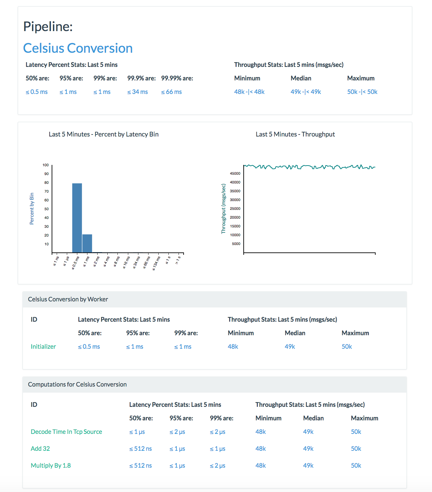
Stats Overview Section
The Detailed Metrics page gives us deeper dive into the stats for a given element within a section. Every Detailed Metrics page will include an expanded stats line, also including the 99.9% and 99.99% Percentile Bins. Having a look below we can see that 99.99% of messages processed for the Celsius Conversion pipeline are less than or equal to 66 milliseconds. We can also see that we have a median throughput of 49k. Both these stats representing the last 5 minutes of processing data from the incoming stream.
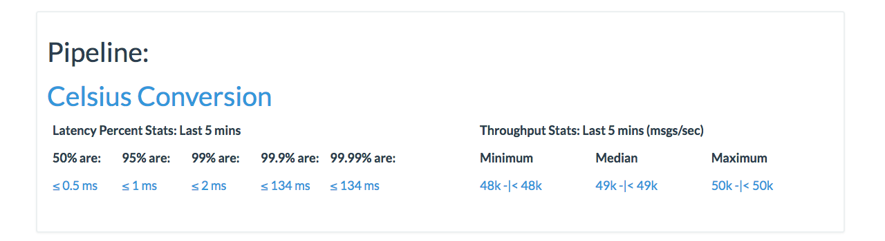
Graphs Section
Percent by Latency Graph
The first graph we'll see is the Percent by Latency Bin graph. This graph is grouped by the following bins on the x-axis: ≤ 1 μs, ≤ 4 μs, ≤ 16 μs, ≤ 66 μs, ≤ 260 μs, ≤ 1 ms, ≤ 4 ms, ≤ 16 ms, ≤ 66 ms, ≤ 260 ms, ≤ 1 s, > 1. Where the time unit represents the upper limit of that bin and the lower limit is the upper limit of the bin before it (or 0 for the first bin). Each bar representing the percent of latencies that fall within that bins range. With the y-axis representing the percentage for each bin.
If we look at our example below we can see that roughly 75% of our latencies for all messages processed within the last 5 minutes for the Celsius Conversion Pipeline are greater than 1 microsecond but less than or equal to half a millisecond.
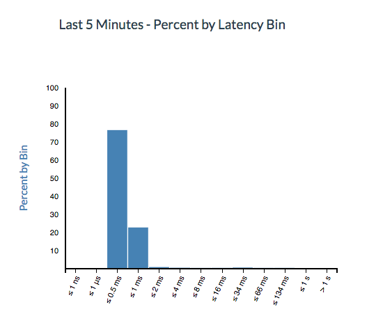
Median Throughput per Second Graph
The second graph on our page is the Median Throughput per Second graph. The x-axis represents each second within the last 5 minutes of processing and the y-axis represents the median throughput. As we can see in the image below, our median throughput fluctuates between 48k and 50k.
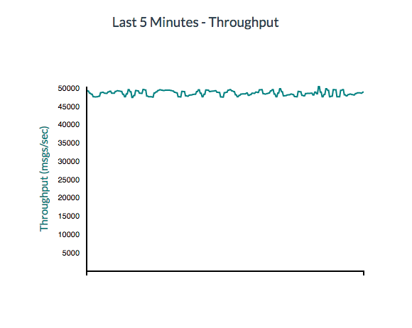
The remaining sections on a Detailed Metrics page differ depending on the category the Detailed Metrics page represents.
Pipeline Detailed Metrics
Continuing to look at the detailed metrics page for our Celsius Conversion pipeline, we'll see that we have two additional tables below our graphs section.
Pipeline by Worker Table
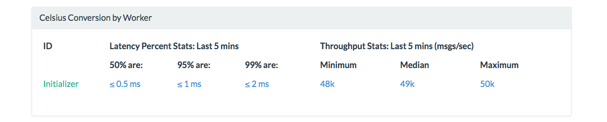
The first table is our Pipeline by Worker table, which in this case is titled Celsius Conversion by Worker. This table lists all of the workers which contribute to our Pipeline in order for us to get our metrics. The aggregation of the stats represented by each worker here will give us the total Pipeline stats that we saw above in the Stats Overview Section. Since we're running a single worker, the Celsius Conversion Pipeline stats and the Celsius Conversion by Worker stats for the Initializer will be exactly the same. Clicking on the Initializer link on this table will take us to the Pipeline by Worker detailed metrics page but we won't do that just yet.
Computations for Pipeline Table
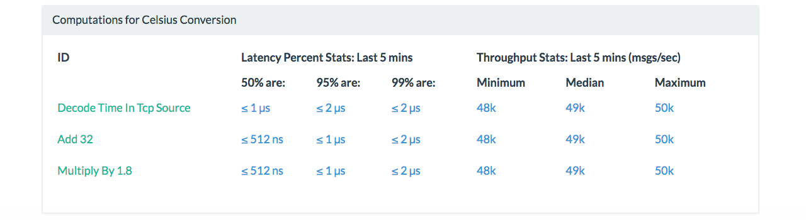
The second table is our Computations for Pipeline table, which in this case is titled Computations for Celsius Conversion. This section lists the computations being run for our Celsius Conversion pipeline and the Decode Time in TCP Source for the data being processed by this pipeline. We can see that we're running Add 32 and Multiply by 1.8 as the computations that make up our pipeline. Each computation provides its own stats line. Clicking on the title for each will take us to the Detailed Metrics page for that Computation.
Now that we have an overview of the additional sections for our Pipeline Detailed Metrics page, let's go ahead and click on Initializer in our Celsius Conversion by Worker table to get to the Pipeline by Worker Detailed Metricspage.
Pipeline by Worker Detailed Metrics
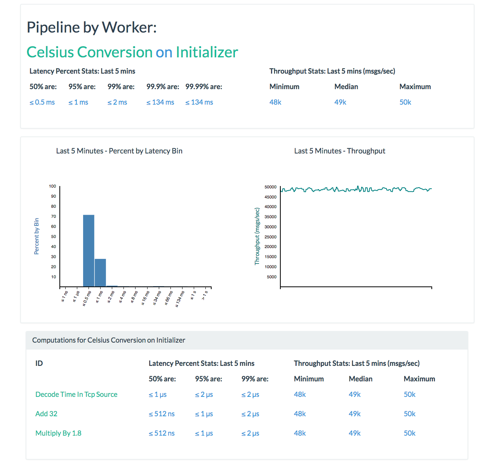
As we can see above, the Pipeline by Worker detailed metrics page includes our two main sections: Stats Overview Section and Graphs Section.
One thing that is unique is that Celsius Conversion on Initializer title is broken into links where Celsius Conversion will direct us to our Pipeline Detailed Metrics page and Initializer will direct us to our Worker Detailed Metrics page so we don't have to navigate back to our Application Dashboard page in order to see the performance for those elements within their sections.
The other unique section on this page is the Computations for Pipeline on Worker table.
Computations for Pipeline on Worker Table
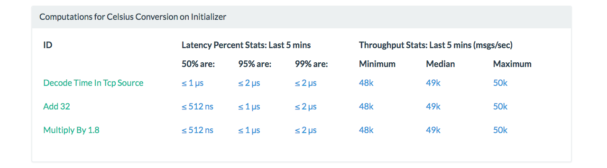
The only additional table present on this page is our Computations for Pipeline on Worker table, which in this case is titled Computations for Celsius Conversion on Initializer. This table lists all of the computations which contribute to our Celsius Conversion pipeline that is running on the Initializer worker. Since this application is running as a single worker, we'll see that all of our computations for Celsius Conversion are running on this worker. We'll see the common stats lines that we expect for our tables. Clicking on the title of each computation will take us to our Computation by Worker page. So let's click on Add 32 and have a look.
Computation by Worker Detailed Metrics
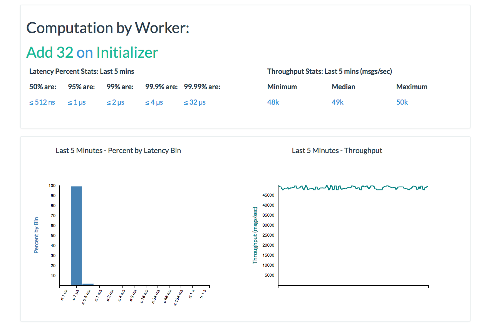
Above we can see the Computation by Worker detailed metrics page for our Add 32 computation running on our Initializer worker. Like our Pipeline by Worker Detailed Metrics page, our title will link us up to the Computation Detailed Metrics page and the Worker Detailed Metrics page. In this case, Add 32 and Initializer respectively.
Since we've drilled down far as we can go for our metrics for a computation, there are no additional sections on this page.
Let's click on Initializer in the title of the Stats Overview Section so we can go to our Worker Detailed Metrics page.
Worker Detailed Metrics
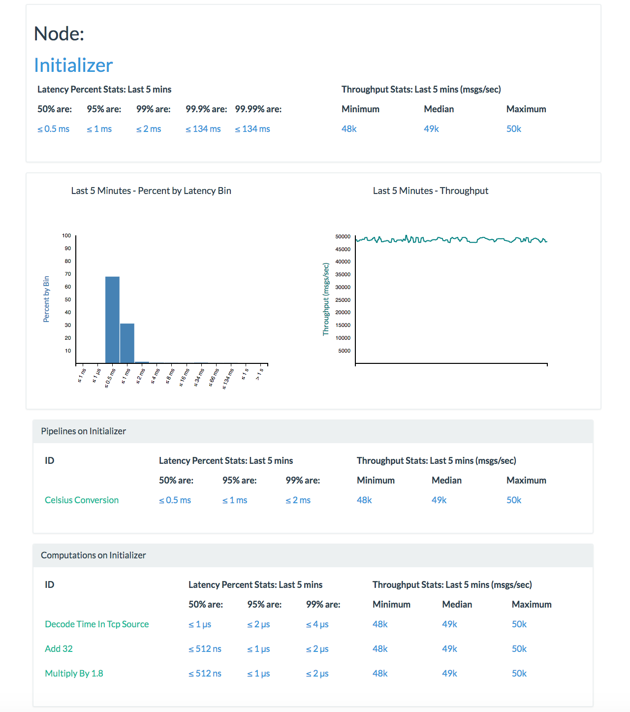
Above we can see the Worker detailed metrics page for our Initializer worker. Once again we'll see our common Stats Overview Section and Graphs Section. In the case of a Worker Detailed Metrics page, there are 2 additional sections.
Pipelines on Worker Table
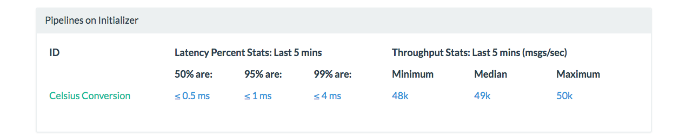
The first table is our Pipelines on Worker table, which in this case is titled Pipelines on Initializer. This table lists all of the pipelines which contribute to our worker in order for us to get our metrics. The aggregation of the stats represented by each pipeline here will give us the total worker stats that we see above in the Stats Overview Section. Since we're running a single pipeline for this application, the Initializer stats in the Stats Overview Section and the Pipelines on Initializer stats for the Celsius Conversion pipeline will be exactly the same. Clicking on the Celsius Conversion link on this table will take us to the Worker by Pipeline detailed metrics page but we won't do that just yet.
Computations on Worker Table
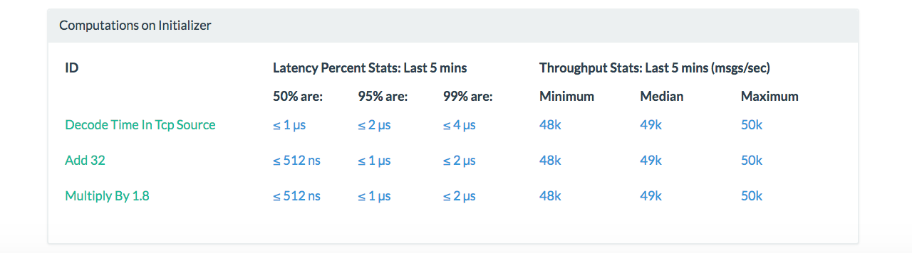
The second table is our Computations on Worker table, which in this case is titled Computations on Initializer. This section lists the computations being run for all pipelines on the Initializer worker. We can see that we're running Add 32, Decode Time in TCP Source, and Multiply by 1.8 as the computations that make up our Celsius Conversion pipeline. If we were to have any other pipelines running for a given application, they will show up here as well if running on this worker. Clicking on the title for each will take us to the Detailed Metrics page for that Computation.
Now that we have an overview of the additional sections for our Worker Detailed Metrics page, let's go ahead and click on Celsius Conversion in our Pipelines on Initializer table to get to the Worker by Pipeline Detailed Metrics page.
Worker by Pipeline Detailed Metrics
Like all other detailed metrics pages, we include our common sections.
Additionally, our Celsius Conversion on Initializer title is broken into links where Celsius Conversion will direct us to our Pipeline Detailed Metrics page and Initializer will direct us to our Worker Detailed Metrics page.
There is a single additional section for this page.
Computations for Pipeline on Worker Table
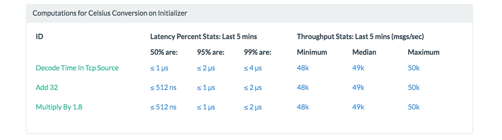
The only table on our page is our Computations for Pipeline on Worker table, which in this case is titled Computations for Celsius Conversion on Initializer. This table lists all of the computations which contribute to our Celsius Conversion pipeline that is running on the Initializer worker. As mentioned previously, since this application is running as a single worker, we'll see that all of our computations for Celsius Conversion are running on this worker.
Since we've already visited the Computation by Worker Detailed Metrics page above, let's use the navbar to visit the Add 32 Computation Detailed Metrics page.
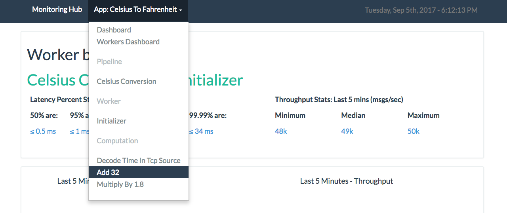
Computation Detailed Metrics

Above we can see the Computation Detailed Metrics page for our Add 32 computation. Once again we'll see our common Stats Overview Section and Graphs Section. There is one additional section for this page.
Computation on Worker Table
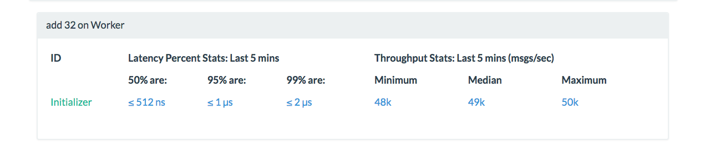
The only table on our page is our Computation on Worker table, which in this case is titled Add 32 on Worker. This table lists all of the workers which contribute to our Add 32 computation. Since we're only running a single worker for this application, we'll only see Initializer in this list. The stats reported in the Stats Overview Section for our Computation Detailed Metrics page are a direct aggregation of each element in the Computations on Worker table. Since we only have one worker we can note that the stats are exactly the same.
Limitations
Currently, the Metrics UI throughput graphs do not continue to update if new metrics data has not been processed. Thus the graphs represent the last 5 minutes of processed data. This will be addressed in a future release.
Conclusion
By this point, we've covered what the Metrics UI is and what Metrics are collected by the Metrics UI from Wallaroo. We have also gone over the pages that make up the Metrics UI. You should now be able to direct metrics from your own Wallaroo application to the Metrics UI and understand how to monitor your application.